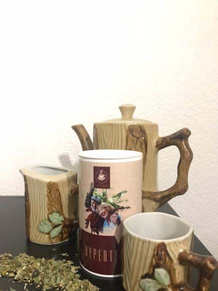
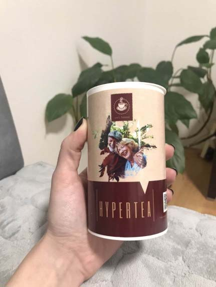

«Из-за гипертонии головные боли уничтожали меня. Я не могла работать, есть, спать, они преследовали меня повсюду. Я не хотела, чтобы высокое кровяное давление привело к ранней смерти» Мирьяна Каранович вылечила гипертонию в домашних условиях, пока врачи назначали дорогостоящие бесполезные лекарства
Статистика заболеваний гипертонией совсем не радует врачей и жителей Сербии. Министерство здравоохранения Сербии прогнозирует, что в 2023 году более 200 000 сербов умрут от сердечно-сосудистых заболеваний.
С ужасной болезнью столкнулась и Мирьяна Каранович. Грустно осознавать, что даже таким знаменитым людям никто не может помочь, что говорить уже об обычном среднестатистическом жителе Сербии. Но Мирьяна нашла выход. Ей понадобился месяц, чтобы вылечить гипертонию в домашних условиях, отказаться от поликлиник и дорогостоящих рецептов местных врачей. Сегодня она раскроет все секреты своего выздоровления, возвращения на работу и прекрасной улыбки.
Гипертонию называют одним из самых коварных заболеваний. И я убедилась в этом на своем опыте. Коварство заключается в том, что болезнь протекает бессимптомно долгое время. Иногда повышение кровяного давления сопровождается небольшой головной болью, усталостью и снижением работоспособности. На подобные явления люди не обращают внимание, и продолжают их игнорировать до возникновения первого гипертонического криза. Вот здесь все и начинается.
Проходит месяц такого игнорирования и вы не можете открыть глаза из-за головной боли, а ваши показатели верхнего давления стабильно 180 и выше. Все, что я хотела тогда — это закрыть глаза и больше не просыпаться. Порой мне казалось, что мои виски сейчас лопнут. О работе и речи быть не могло, ведь я с трудом передвигалась по квартире.
Казалось, будто за месяц я постарела на 10 лет. Все это уничтожало меня очень быстро и стремительно, а у меня не было сил на эту борьбу!
Еще одна ловушка, которая поджидала меня — это консервативное лечение, которое предлагают нам в больницах. Кто знал, что я потеряю так много времени и денег на дорогостоящее лечение, которое не даст мне абсолютно ничего, кроме пустой банковской карточки. Да, моя голова адски болела, но я доверяла докторам. Затем я прозрела и поняла, что с меня только выкачивают деньги. Я решила, что действовать нужно решительно и самостоятельно.
Только представьте, за несколько дней лечения я тратила почти 59 000 сербских динар, что равняется средней зарплате в Сербии на месяц. Как обычный человек может позволить себе это? Да, я тратила огромные деньги на лечение, в то время, как моя болезнь прогрессировала. Мои руки опускались с каждым днем все больше и больше.
Обнаружить гипертонию на ранних стадиях не очень просто, но стоит быть очень внимательным к себе. Я пропустила первые моменты, когда болезнь только зарождалась и пожалела об этом. Проверьте себя непременно, если вы нашли у себя хотя бы 2 симптома, это уже повод забеспокоиться и начать бороться с болезнью. Не зря гипертонию называют «тихим убийцей».
- частая головная боль, которая не блокируется обезболивающими таблетками;
- головокружения;
- носовое кровотечение;
- ухудшение памяти, снижение концентрации внимания;
- утомляемость;
- тошнота;
- ощущение пульсации в разных участках тела, вроде затылка и висков;
- ощущение «тумана в голове»;
- снижение остроты зрения;
- лишний вес (даже незначительный).
При длительной гипертонии поражаются внутренние органы, поэтому может возникнуть боль в грудной клетке, рвота, судороги, спутанность сознания. Сейчас эти симптомы вызывают в моей памяти лишь ужасные воспоминания. Я вылечилась сама. И я так рада, что могу делиться этим с вами.Моя жизнь была в шаге от неминуемых разрушений из-за нескольких симптомов, которые я сворачивала на усталость.
Я смирилась с тем, что заболела, но не могла мириться с тем, что в 21 веке мне не могут помочь врачи с моим диагнозом. Но решение нашло меня само, как будто жизнь дала шанс. И я не могла им не воспользоваться. Ведь другого варианта не оставалось.
Все, что я могла делать — это лежать на диване и слушать новости.
И в одном из выпусков было выступление Даницы Груичич. Она рассказывала о том, что найдена главная причина гипертонии и ранней смерти – это загрязненные сосуды. Как жаль, что ни один врач в больнице не сказал мне об этом!
А ведь на самом деле все очень просто и понятно, если разобраться.
Вот, что сказала профессор Даница Груичич:
«На протяжении всей жизни на стенках наших сосудов откладывается холестерин. Почему это происходит? На это влияет множество факторов, таких как курение, нездоровое питание, плохая экология. С возрастом мы меньше двигаемся, и наши сосуды начинают загрязняться. И это, к сожалению, неизбежно, ведь все мы обычные люди. Находясь в крови, холестерин откладывается по стенкам сосудов.
Сначала это тонкий слой (через 20-25 лет), затем холестериновый слой быстро утолщается (25-40 лет), потому что к липкой поверхности прилипает все больше и больше частиц. В итоге в 45 лет холестерин почти вдвое закрывает просвет сосудов и мешает качать кровь. И сердцу не остается ничего другого, кроме как повышать кровяное давление. Представьте, это будто застывший жир на неочищенной поверхности».
Но и это не самое ужасное. Страшен тот факт, что такая загрязненная кровь очень быстро циркулирует по вашему организму, поражая все остальные органы. Вот почему процесс настолько быстр и необратим. В такой крови есть холестерин, липиды, различные примеси.
К опасным осложнениям заболевания относят гипертонический криз. Это резкое повышение кровяного давления до критических показателей требует немедленного снижения АД внутривенными препаратами. Если вовремя не оказать медицинскую помощь, высокое давление в сосудах может привести к поражению важных органов — сердца, мозга и почек. А это может привести к быстрой смерти, если не очищать сосуды.
Финальная фраза министра здравоохранения повергла меня в шок и заставила действовать:
«Каждый третий житель страны старше 45 умрет от гипертонии в ближайшие 10 лет, не подозревая, что болен. Поэтому министерство всерьез занялось решением глобальной проблемы – гипертонии!»
Я не хотела быть в числе этих людей, поэтому я должна была вылечиться и поделиться решением с остальными! Теперь я знаю, что гипертонию можно вылечить быстрее, чем простуду. Нужно просто регулярно очищать сосуды. Очистка сосудов позволяет вылечить 6 заболеваний: гипертония, тахикардия, атеросклероз, аритмия сердца, гипертензия и миокардит. Эти болезни объединены в одну группу, т.к. причина их появления – "грязь" внутри артерий, которая загрязняет кровь и органы. Сейчас я расскажу как от этого избавиться.
Все благодаря одному компоненту, которым в Японии лечатся все долгожители. В нашем случае этот компонент запускает очистку сосудов.
Это активные молекулы кислорода. Вещество работает как антижир для наших сосудов: растворяет холестерин, сгустки крови, кристаллы кальция и опасные отложения, выводя их через почки наружу. Вот так и работает средство благодаря этой уникальной формуле.
Активные молекулы кислорода были открыты еще в прошлом веке японскими учеными. Они обнаружили, что этот компонент содержится в настоящем японском чае, который местные жители пьют каждый день. Чайная церемония - это традиция, которая помогает японцам жить долго и счастливо. Именно поэтому в японии средний возраст превышает 85 лет. Это возможно и в нашей стране.
И этот чай называется Hypertea.

Я начала еще больше вникать в этот вопрос и нашла статистику Министерства здравоохранения Сербии, которая показывает эффективность Hypertea. Статистика есть на сайте, но никто не говорит о ней, ведь никому не выгодно лечить людей эффективными и недорогими методами, когда есть дорогостоящие таблетки.
Результаты тестирования натурального чая Hypertea на основе изучения личных медицинских карточек 5896 пациентов Клинического центра Сербии в Белграде:
Полностью избавились от проблем с артериальным давлением и устранили сердечно-сосудистые заболевания за 60 дней – 87% пациентов.
Полностью очистили сосуды и побороли все риски сердечно-сосудистых заболеваний – 96% пациентов.
Нормализовали сердечный ритм, улучшили общее состояние здоровья без побочных эффектов во время лечения – 92% пациентов.
Так было и со мной. За месяц применения Hypertea меня понемногу начали отпускать головные боли. А через 2 месяца я снова вернула прошлую себя — активную, трудоспособную и жизнерадостную! Всего 2 месяца, и я чувствую себя еще моложе лет на 10!
Я уже упоминала выше о том, как хотят нажиться на людях в Сербии. Я не хочу чтобы вы стали жертвой наценки и бюрократии. Поэтому я хочу поделиться с вами ссылкой на специальный сайт, где можно заказать Hypertea онлайн без переплаты. Для этого на сайте необходимо заполнить заявку на получение лекарства.
Условия так же просты, как и само лечение:
- Вам нужно находиться на территории Сербии. Производитель не отправляет Hypertea за пределы страны.
- Вы можете заказать Hypertea ТОЛЬКО ДЛЯ ЛИЧНОГО ИСПОЛЬЗОВАНИЯ. Прошу спекулянтов оставить лекарство для людей! Не по-человечески наживаться на людях, которые хотят помочь себе сами!
- Вы можете заполнить официальную форму для получения препарата на этом сайте. Необходимо указать номер телефона для связи с консультантом. Если вы хотите поправить свое здоровье и устранить скачки давления за счет глубокой очистки сосудов, заказывайте препарат как можно скорее, пока он есть в наличии.
- Воспользуйтесь персональным промокодом, чтобы купить продукт по скидке 50%!
Не дайте болезни отнять у вас счастливые годы жизни. Решения есть всегда. Лучше решение от сердечно-сосудистых заболеваний — Hypertea!
Pažnja! Hypertea brzo nestaje.
Broj pakovanja leka brzo se smanjuje!
5 pakovanja
*(ako ne stignete da popunite formu do isteka navedenog vremena, vaša rezervacija će biti preneta na drugog pacijenta, pošto leka nema dovoljno).

Puno vam hvala za to što pružate penzionerima takvu izvanrednu mogućnost! Lečila sam se Hypertea preparatom. Imala sam visoki tlak, a sada mi se tlak uopšte ne povećava. Stalno sam imala bol u kolenima, sada nemam tih tegoba. Glavobolja je nestala. Prošla je gorčina u ustima. I još dosta toga se promenilo na bolje. Kao da sam se podmladila!
Naručio sam. Jako se nadam da će biti lijeka i za mene. Imam 64 godine i sav se raspadam. Puno sam čitao o čišćenju krvnih žila i koliko to pomaže ozdravljenju. Želim da to probam na sebi.
Hypertea je daleko najbolje sredstvo od svih! Prvo sam dugo koristila adelfan, pa onda erinit. Znam da su to zastareli lijekovi. Ali ne volim da idem kod lijekara, a nije mi tolika nužda bila. Ponekad sam uzimala te lijekove, kada je tlak skakao ili srce bolelo. No odjednom su lijekovi prestali da deluju. Onda sam pošla kod doktora i on mi je preporučio da probam novo sredstvo Hypertea (taj lijekar je mlad, pa verovatno još veruje da je medicina institucija koja pomaže ljudima, a ne da uzima novac od njih). Hypertea mi je odmah pomogao, čim sam krenula da ga pijem: tlak mi se odmah smanjio, ali je doktor rekao da treba celi tječaj da prođem. Kroz 3 tjedna sam zaboravila za hipertenziju. Varikoza mi je prošla, a mučila me 10 godina. Još sam imala ginekološki problem, a i on je nestao kao da nikad nije ni postojao. Osećam se odlično, kao u mladosti.
I ja sam se lečio sa Hypertea. Baš mi je puno pomogao. Opšte zdravstveno stanje se znatno poboljšalo. Preporučio bih taj lijek svim starijim osobama.
Želim da potvrdim – lijek je pravo čudo!!! Kupila sam Hypertea, kao što je pisalo, sa popustom. Imala sam tlak, skoro svako veče me je bolela glava toliko da poludim, nisu pomagali ni lijekovi protiv bolova. Mada sam kasnije saznala da je glava bolela od tlaka. Uglavnom, školska drugarica mi je preporučila taj Hypertea, pa sam uspela da ga dobijem sa popustom. Bila sam jako zadovoljna. Kroz 2 mjeseca već sam bila druga osoba. Shvatila sam da pre čišćenja krvnih žila maltene nisam ni živela! Glavobolja me više ne muči; varikoza mi je nestala i NAJVAŽNIJE – SMRŠALA SAM 20 KILOGRAMA! Sa 94 kg na 74 kg. Eto šta znači normalizacija krvotoka!
Slažem se. Jako efikasno sredstvo za probleme sa pritiskom! Sada mi je tlak stabilan, 120 sa 80.
Prihvatila sam izazov i nisam zažalila. Ako postoji problem sa krvnim žilama, onda preporučujem to sredstvo. Nuspojava nije bilo i zadovoljna sam rezultatom.
Toliko sam Vama zahvalna za informaciju vezano za ovaj lek. Davno sam preželjkivala nešto slično. Jedva čekam pošiljku! Stigla sam da kupim preko akcije. Hvala!
Imao sam hipertenziju. Imao sam, a sada nemam... za 10 dana sve je prošlo! Hvala vam za to!
Zahvaljujem za Hypertea! Čim sam probao, osetio sam znatno olakšanje. Videćemo šta će biti za nedelju dana. Za sada je rano govoriti o trajnim rezultatima, kasnije ću Vam napisati. Ali tlak je već sada prestao da skače, ne osećam ga. Mislim da ću uspeti!
O Hyperteau doktor je rekao istinu. Ja sam jedan od onih koji su stigli da ga probaju. Ja sam hipertenzičar sa „stažem“, 7 godina patim od tog obolenja. Već sam se pomirio sa mišlju da ću do kraja života piti tablete, ali nakon kursa “Hypertea“ tlak je potpuno prestao da se povećava.
O da, to je pravi lijek! Sve mi je bolelo. Leđa, levi bok, zglobovi nisu hteli da me slušaju. Tlak je znao toliko da se popne da samo poželiš da nestaneš. Ujutru jedva sam se budila. Moj život je ličio na pakao. Tablete sam pila šakama. A onda sam saznala za Hypertea i čišćenje krvnih žila. Nakon 3 tjedna pijenja lijeka osetila sam da se opšte stanje znatno poboljšalo. Sada sam počela aktivno da se bavim svojim zdravljem. Nadam se da ću još da poživim! Velika Vam hvala!
Moj komšija na vikendici često se žalio na svoje zdravlje zbog svakakvih bolesti, čas želudac, čas srce. Ali zadnji mjesec vidim da je aktivan i veseo, živnuo je. On je ispričao da je pio kesice Hypertea. On ima 72 godine.
Hvala na info.
Ljudi, učinite to, dok ima tog lijeka, ostalo je još samo nekoliko komada! Ako ste u mogućnosti, naručite odmah. Čisti krvni žili su osnov svega. Želim svima dobroga zdravlja i puno godina života!